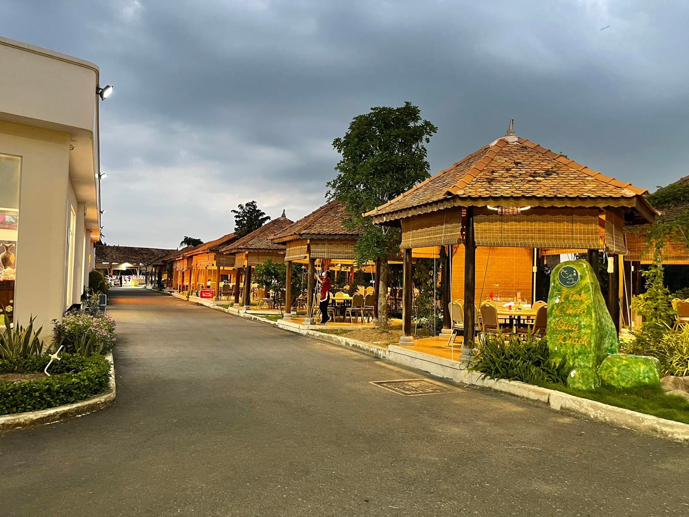

Cần Giuộc · Long An
Hẹn gặp bạn tại Mỹ Yến.
Không gian sân vườn và đại sảnh cho những bữa ăn, cuộc gặp và dịp chúc mừng đáng nhớ.
Thông tin ghé thăm
Nhà Hàng Mỹ Yến
Khu phố 4, Đường Nguyễn Thái Bình, Thị trấn Cần Giuộc, Cần Giuộc, Long An
Mỗi ngày, 06:00–21:00
0948 900 488
nhahangmyyen88@gmail.com